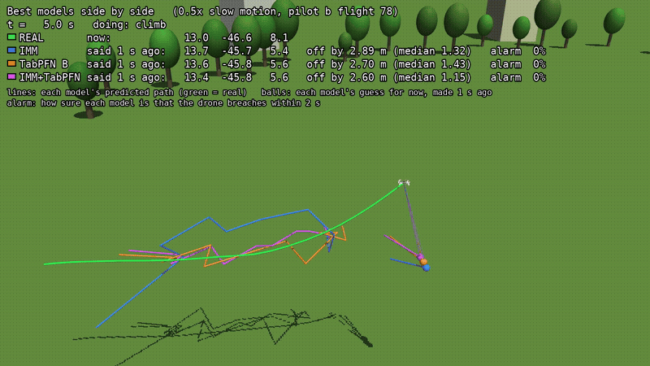
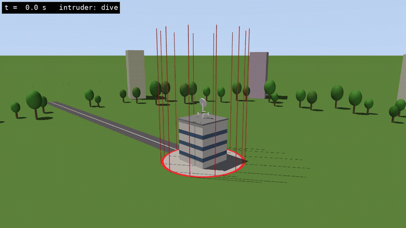

A radar knows where a drone is. To stop it, you need where it will be, and a small drone can change course within a second. TabPFN predicts that from example radar rows, with no training. Added to the tracker radars already use, it is 10% more accurate, on a pilot it has never seen.
Where it matters: airports, stadiums, power plants, prisons.


Every flight is random: attack, fly past or circle, with zigzags, dives, dashes, climbs and wind. The radar sees a noisy dot 10 times a second, and sometimes nothing.
A breach is the drone inside the zone: closer than 10 m sideways and lower than 30 m.
Answer: x, y, z in metres, with a range. Scored by how far it is from where the drone really was.
Answer: a probability. Scored by how many real breaches it warns about in time.
The models only see what a real radar would have: the dots up to now, turned into 16 numbers (distance, height, speed, turning, climbing, the same a second ago, how many dots were missing).
Examples come from 2,000 flights of a big, fast drone (Skydio X2, 10 m/s). The test is 250 flights of a small, slow one (Crazyflie, 3 m/s) that the models have hardly seen.
Three physics filters (straight, speeding up, turning) that switch automatically. What real radar trackers run. Its 5 settings were tuned on the big drone, and again on the small one for a fair check.
Shown 4,000 example rows from the big drone only. No training.
The same, plus 1,000 rows from 50 other small-drone flights (never the test flights). No training.
The IMM's own guess goes into each row as 6 extra numbers. TabPFN learns from the examples when the IMM is right and how it usually goes wrong.
A normal model is trained for hours on a dataset. TabPFN was pre-trained once, by Prior Labs, on millions of made-up tables. Now it gets our example rows with their answers as part of the question, finds the pattern and answers for the new row.
So to adapt to a new drone, you add example rows. No retraining. That is why 1,000 rows from the small drone help so much.
Error 1 s ahead (median, metres; lower is better). Pilot a flew all the examples; pilot b is a more evasive pilot no model has seen.
| Model | Error, pilot a | Error, pilot b | Breaches warned, a / b |
|---|
Breaches warned: share of real breaches where the alarm fired in time, at 5% false alarms. On the alarm, all models are close; the IMM is slightly ahead on pilot b.
We re-tuned the IMM on the same 50 small-drone flights TabPFN B saw. It improved only slightly (1.54 → 1.50 m). TabPFN B is still 8% better (7.1–9.5%), on 208 of 250 flights.
Pilot b switches twice as often, with sharper zigzags and bigger height changes. Nothing was re-tuned. TabPFN B is still 7.6% better (6.6–8.6%), on 217 of 250 flights.
Each model also gives a 90% range: "the drone will be in here". TabPFN B's range holds the real position 93% of the time on pilot a and 90% on pilot b, as promised. The IMM re-tuned on the small drone: only 82% (pilot a). For safety, a range you can trust matters.
Error by small-drone rows given:
About 250 rows (25 s of radar) already beat both IMMs (1.54 and 1.50 m).
The radar reads every 0.1 s. TabPFN first needed 5.2 s per answer; with its example cache and one pass, 252 ms, with no accuracy lost. Still too slow for every reading, so live: the IMM answers every 0.1 s, TabPFN sends a correction every 0.3 s, and the latest correction is added to the IMM's fresh guess.
Pilot b. Live: 4% better than the IMM (3.6–5.0%), on 201 of 250 flights. The gap to 13% is speed, not accuracy.
| Limit | What it means |
|---|---|
| Simulation only | Real drone models and physics, a realistic radar, but no real radar data yet. |
| Scripted pilots | Two styles tested, TabPFN wins on both; human pilots are next. |
| Close range | 60 m: the last 20–30 s of a defence. Real counter-drone radars see 1–5 km. |
| Perfect example answers | "Where it really went" comes from the simulator; in real use from smoothed past radar tracks, a little noisier. |
| Speed | 252 ms per answer on an H100; under 100 ms would need parallel models or more GPUs. |
| One answer | 1 s ahead only. Shorter horizons make every model look perfect; longer ones were dropped as a team decision. |
A plug-in for counter-drone systems: it sits on the ground station, next to the tracker the radar already runs, and makes it 10% more accurate on attackers it has never seen.
No replacement. The IMM keeps running; TabPFN only corrects it.
No training. A new drone type? Add 25 seconds of its radar tracks as examples.
Enables earlier interception. A defender can fly to where the intruder will be, not where it was. In our demo the defender only hovers; steering it is the next step.
Honest about speed. Works live today at 4%; faster hardware brings it toward 13%.
No. It only gets example rows with their answers. Nothing is trained or fine-tuned.
No. Inputs use only radar readings up to now. Test flights are never in the examples. The answers in the examples come from other, finished flights.
It is what real radar trackers use. We tuned its 5 settings on the big drone, then re-tuned on the same small-drone flights TabPFN saw. TabPFN still wins by 8%.
A flight is one attack, 20–30 s long. A moment is one radar reading in it. 250 test flights give about 112,000 moments, each one prediction to score.
Yes, with a correction every 0.3 s: 4% better than the IMM. With a correction at every reading it is 13% better, which needs faster inference.
Long enough for a defender to react; short enough to be predictable. At 0.2 s the drone moves only about 0.6 m and every model looks perfect.
Every number on this page is in the repo: results/README.md and its CSV files, rebuilt by drone/report.py. The videos are rebuilt by drone/make_videos.sh.